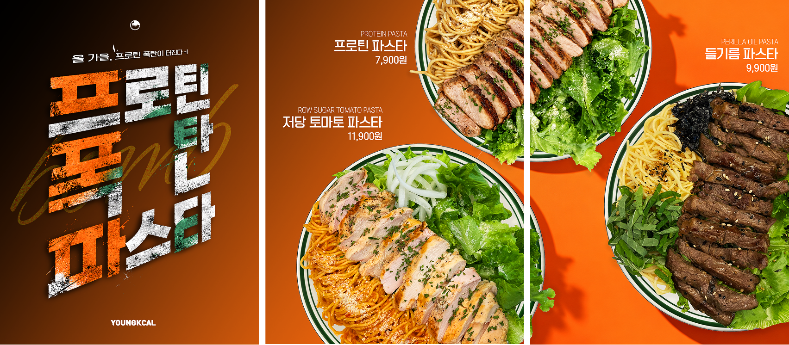
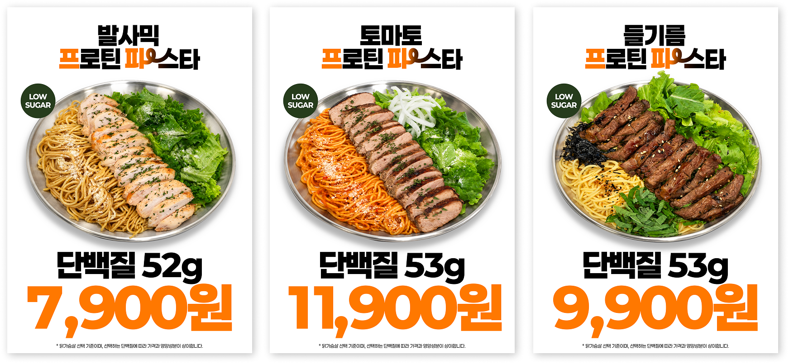
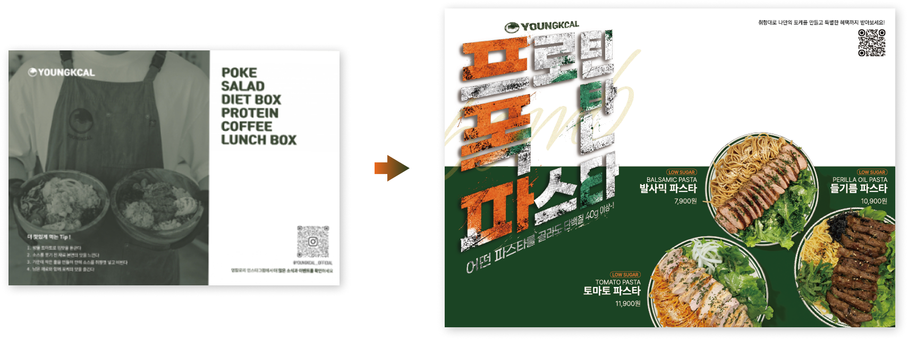
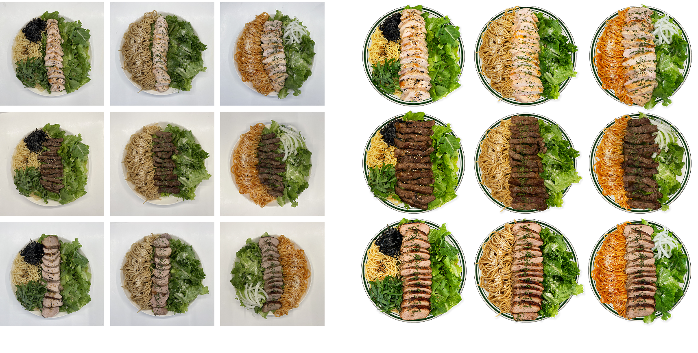

올, 가을 프로틴 폭탄이 터진다 - !
프로틴 폭탄 파스타
SNS 포스터 디자인
Design Concept
신메뉴의 핵심 특징인 고단백을 ‘프로틴 폭탄’이라는 강한 키워드로
시각화했습니다.
프로틴, 폭탄, 파스타에 반복되는
자음 ‘ㅍ’에서 착안해 메인 카피를
‘프로틴 폭탄 파스타’로 정했습니다.
거친 질감의 타이포그래피와 사선 구성을 활용해
폭발적이고 에너지 넘치는 이미지를 표현하고
오렌지와 다크 브라운을 중심으로 강한 대비를 주어 기존의
가벼운 샐러드 이미지보다
든든하고 강렬한 프로틴 메뉴의 인상을 강조했습니다.

매장용 홍보 포스터
Design Concept
3가지 맛과 3가지 프로틴을 조합해 총 9가지로 선택할 수 있는 프로틴 파스타의 특징을 직관적으로 보여주는 데 초점을 맞췄습니다.
발사믹·들기름·저당 토마토의 3가지 맛을 기준으로
각각 다른 프로틴을 매칭해, 한정된 화면에서 메뉴의
다양한 조합을 시각적으로 전달했습니다.
상단에는 맛과 제품명을, 중앙에는 실제 메뉴
이미지를 크게 배치하고, 하단에는 단백질 함량과 가격을
강조했습니다.
제품명보다 단백질 함량과 가격을 크게 배치해,
‘고단백’과 ‘가격 경쟁력’이라는 제품의 핵심 강점이 직관적으로
전달되도록 디자인했습니다.
단백질 함량과 가격은 닭가슴살 선택 기준으로 통일하고, 하단에 기준 정보를 별도로 표기해 9가지 조합에서 달라질 수 있는 정보를 표기했습니다.
Typography
매장 내에서 짧은 시간 안에 제품의 핵심 정보를 전달할 수 있도록
기존
포스터의 거친 질감과 역동적인 타이포그래피 대신
굵고 명확한 고딕체를 활용해 정보 전달력을
높였습니다.
상단의 ‘파스타’ 타이포그래피는 일부 획을 파스타의 면처럼 길게
늘어뜨려 파스타 면이 이어지는 형태를 표현하고
메뉴의 특징을 타이포 자체에서도 느낄 수 있도록 디자인했습니다.

트레이 용지 리디자인
Design Concept
기존 트레이 용지는 브랜드의 메뉴 종류와 브랜드 정보를 전달하는
구성으로 제작되어 있었습니다.
브랜드가 판매하는 메뉴 정보는
제공하지만, 메인 이미지의
음식 사진이 어둡고 작아 메뉴의 맛과 특징이 눈에 잘 들어오지
않았습니다.
고객이 식사하는 동안 자연스럽게 접하는 매체임에도, 새로
출시한 메뉴를 알리거나
주문으로 이어질 만한 정보는 부족했습니다.
새로운 트레이 용지를 신메뉴를 소개하는
매장 내 홍보 매체로 리디자인했습니다.
하단에는 브랜드의 다크 그린 컬러를 넓게 사용해
전체 디자인의 중심을 잡고, 밝은 상단 영역과 대비시켜 정보와 메뉴
이미지가 명확하게 구분되도록 구성했습니다.
특히 메뉴 사진은
원형 플레이트의 형태를 살려 크게 배치하고 일부를 프레임 밖으로
크롭해, 여러 메뉴가 테이블 위에 풍성하게 놓여 있는 듯한 느낌을
주었습니다.
각 메뉴명과 가격은 음식 이미지 주변에 배치해
메뉴를 빠르게 구분할 수 있도록 했습니다.

촬영 및 보정
제품의
고단백 특징이 직관적으로 드러나도록 프로틴의 양과
배치를 수정하였습니다.
배경과 음식이 명확하게 구분될 수
있도록 다크 그린 테두리가 있는 그릇을 선정했으며,
브랜드 메인 컬러와도 자연스럽게 연결되도록
합성했습니다.
